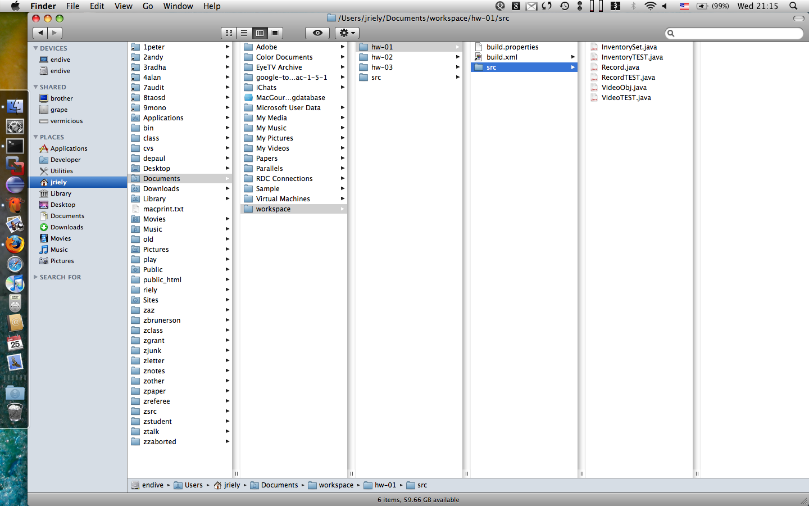
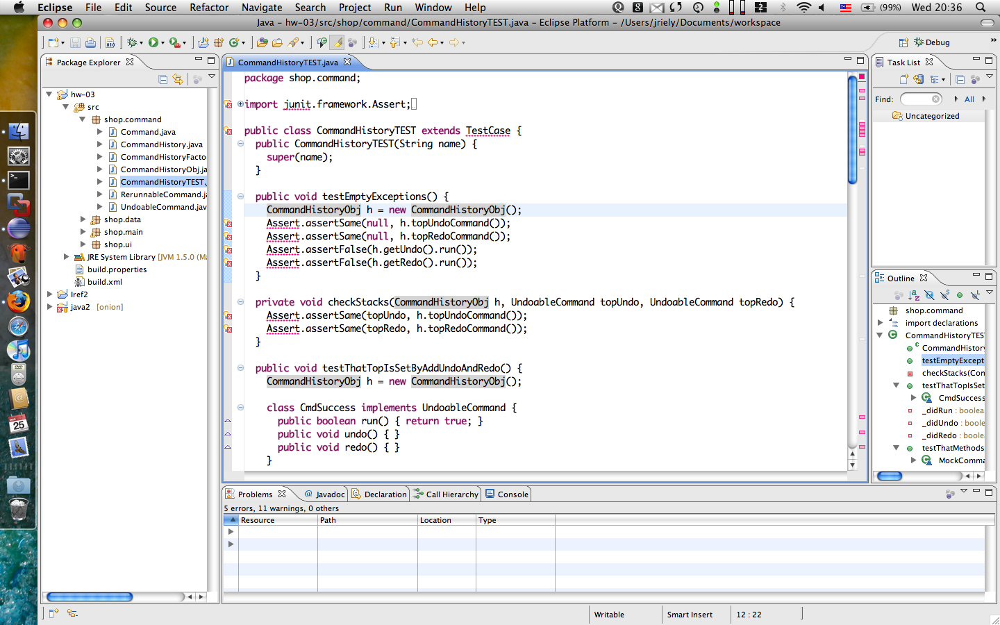
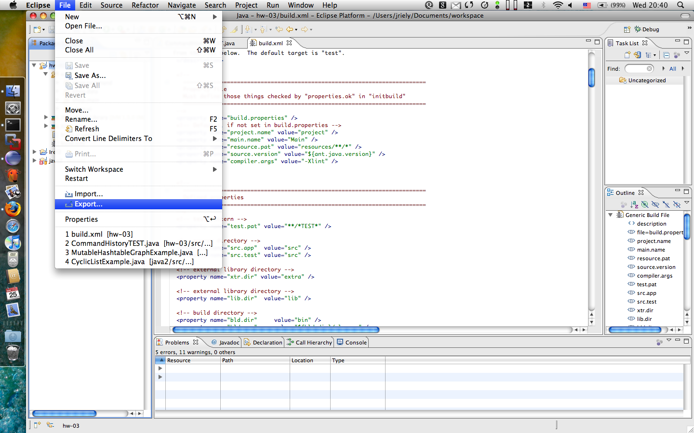

| Contents [0/16] |
| Using Eclipse: Starting a Project [1/16] |
Download Java SE
Download and install eclipse from http://www.eclipse.org/
Copy the homework source files to the eclipse workspace.
| Using Eclipse: Getting homework into the workspace [2/16] |

| Using Eclipse: Getting Junit To Work [3/16] |

| Using Eclipse: Creating a Zip to Hand in [4/16] |

| Using Eclipse: Eclipse Options [5/16] |
The following are comments from students using eclipse:
| Using Command Line Tools: OSX: Java/Ant/Junit [6/16] |
/Applications/Utilities/Java/Java
Preferences.app and select the most recent versions
of the tools.
export CLASSPATH=".:$HOME/Library/Java/junit???.jar:$CLASSPATH"
| Using Command Line Tools: Ubuntu: Java/Ant/Junit [7/16] |
sudo apt-get install sun-java6-jdk ant junit4
export CLASSPATH=".:/usr/share/java/junit4.jar:$CLASSPATH" export JAVA_HOME="/usr/lib/jvm/java-6-sun-1.6.0.06"
| Using Command Line Tools: Windows: Textpad/Java/Ant/Junit [8/16] |
| Using Command Line Tools: Windows: Setting Variables in XP [9/16] |
For example, this is how you change the
JAVA_HOME variable for Java 1.6.0_10
start |
settings |
control panel |
system |
advanced |
environment variables |
user variables |
new | (or edit)
Variable Name: JAVA_HOME
Variable Value: C:\Program Files\Java\jdk1.6.0_10
The settings I use are:
JAVA_HOME C:\Program Files\Java\jdk1.6.0_10 CLASSPATH .;C:\local\junit\junit.jar PATH .;C:\local\apache-ant\bin;C:\local\bin
Do not delete anything from the system PATH
variable. You can simply edit (or create) the
PATH user variable, and add
;C:\local\apache-ant\bin;C:\local\bin to the end.
| Using Command Line Tools: Problems? [10/16] |
The message 'ant' is not recognized as an internal or external command, operable program or batch file. indicates that you should add c:\local\apache-ant\apache-ant-1.7.0\bin to your PATH variable. The message Unable to locate tools.jar indicates that JAVA_HOME is not set correctly. It should be the location of the jdk; something like C:\Program Files\Java\jdk1.6.0_2 Take a look to see what the correct name is on your machine. The final error indicates that you are running ant from the wrong directory. You should 'cd hw-01" to the place where you have put hw1. It should include a directory named "src" and two files: "build.xml" and "build.properties". > Microsoft Windows XP [Version 5.1.2600] > (C) Copyright 1985-2001 Microsoft Corp. > C:\Documents and Settings\My Documents>ant > 'ant' is not recognized as an internal or external command, > operable program or batch file. > C:\Documents and Settings\My Documents>cd > c:\local\apache-ant\apache-ant-1.7.0\bin > C:\local\apache-ant\apache-ant-1.7.0\bin>ant > Unable to locate tools.jar. > Expected to find it in C:\Program Files\Oracle\jre\1.3.1\lib\tools.jar > Buildfile: build.xml > initbuild: > [echo] Type "ant -projecthelp" for help > [echo] The following values may be set in the file build.properties: > [echo] project.name = project > [echo] main.name = Main > [echo] resource.pat = resources/**/* > [echo] source.version = 1.3 > [echo] compiler.args = -Xlint > source: > compile: > BUILD FAILED > C:\local\apache-ant\apache-ant-1.7.0\bin\build.xml:195: srcdir > "C:\local\apache-ant\apache-ant-1.7.0\bin\src" does not exist! > Total time: 0 seconds > C:\local\apache-ant\apache-ant-1.7.0\bin>
| Using Command Line Tools: UnsupportedClassVersionError [11/16] |
If you compile java using some version of javac
and then attempt to run the class file with an older version
of java, you will get something like this:
Exception in thread "main" java.lang.UnsupportedClassVersionError: Bad version number in .class file
at java.lang.ClassLoader.defineClass1(Native Method)
at java.lang.ClassLoader.defineClass(ClassLoader.java:620)
at java.security.SecureClassLoader.defineClass(SecureClassLoader.java:124)
at java.net.URLClassLoader.defineClass(URLClassLoader.java:260)
at java.net.URLClassLoader.access$100(URLClassLoader.java:56)
at java.net.URLClassLoader$1.run(URLClassLoader.java:195)
at java.security.AccessController.doPrivileged(Native Method)
at java.net.URLClassLoader.findClass(URLClassLoader.java:188)
at java.lang.ClassLoader.loadClass(ClassLoader.java:306)
at sun.misc.Launcher$AppClassLoader.loadClass(Launcher.java:268)
at java.lang.ClassLoader.loadClass(ClassLoader.java:251)
at java.lang.ClassLoader.loadClassInternal(ClassLoader.java:319)
The UnsupportedClassVersionError happens when a
JRE tries to run code compiled with a later version JDK.
You can check the versions by typing
java -version javac -version
Make sure that your JAVA_HOME environment
variable is pointing to the same version as
java. It should also be the same as
javac.
If java and javac disagree, this
means that you have multiple versions of the JRE/JDK
installed, and that an old version of the JRE is in your
PATH before the JDK. The easiest thing to do is to ensure
that you only have one JDK installed.
| Using Command Line Tools: Using Windows98 [12/16] |
In older versions of windows, you can set your system variables permanently by adding lines to the end of c:\autoexec.bat and restarting your computer. For example:
set PATH="%PATH%;C:\local\apache-ant\bin;C:\local\bin"
If shell gives you the error "Out of environment space", then apply the solution found here: http://support.microsoft.com/default.aspx?scid=KB;EN-US;Q230205&
If you are still having trouble, make directory names seven characters or less. For example, rename "c:\local\apache-ant" to "c:\local\ant".
In order to open the zip files, use WinZIP
| Using Command Line Tools: Using Ant with TEXTPAD [13/16] |
Tom Wilczak has advice for using ant with textpad:
^[ \t]+\[javac\] \([A-Za-z]:[^:]+\):\([0-9]+\):
To run Ant, select it from the "Tools" menu while editing any project source file. The build.xml file may be in the same directory, or any ancestor directory.
To jump to the offending line on a compiler error, double click the second line of the error message. This works only for compiler errors and not for failed tests.
You can also configure the tools to run from your choice of keyboard shortcuts by selecting the Keyboard option in the preferences box, and selecting tools. The rest should be self explanatory.
| Using Command Line Tools: Download Ant and Junit Together [14/16] |
You can also run ant/junit by doing the following:
util" in the same
directory with build.xml
util directory.
ant.bat to suit your
system.
Say I am using JDK1.6.0 and downloaded ant.bat and
antjunit.jar to E:\jriely\450; then I
set the variables as follows.
set JAVA_HOME=C:\Program Files\Java\jdk1.6.0_01 set ANTJUNIT=E:\jriely\450\antjunit.jar
E:\jriely\450\hw-01> dir /b build.properties build.xml extra source
E:\jriely\450\hw-01> E:\jriely\450\ant.bat
You can put this on a USB key and run ant anywhere the JDK is installed, simply by changing these two variables to match the system you are plugged into.
| Using Command Line Tools: Using Eclipse [15/16] |
Is there anyone using Eclipe?
At this point I'm using it to edit stand alone files... I did not have
a chance to see how to set it up to open all these files in a single
solution, for editing, build, testing (even debugging).
If someone is already using Eclipse in "full mode" and could share
with the steps to get there, I would really appreciate it.
------------------------------------------------------------------
I am using it. I believe if you download at least 3.x you will have
JUnit and Ant plugins standard. Ant should be set up "out of the box"
and the only thing you'd need for JUnit is to edit the build path and
make sure the JUnit jar is there (it isn't by default; click "external
jars" and navigate to
"C:\eclipse\plugins\org.junit_3.8.2.v200706111738" or similar to see
and select "junit.jar").
What I've been doing is creating a new java project -> "Java Project
from Existing Ant Buildfile", "browse" to the build.xml for the given
homework and select it (hence I've got a unique project for each
homework). this sets things up nicely.
You should be able to right-click on any TEST file and "Run as" will
give you "Junit test" as an option - just select that to run your
tests in an appropriate way. You should have something similar with
ant: right click on the build.xml and choose from "Run as" "Ant build
file..." (make sure it's the one with the ellipsis). The "run dialog"
will appear and you can then add the junit jar to the classpath tab
therein.
Sorry this is not the best, most linear instructions - don't have time
right now to do better. Feel free to post followup questions - I will
do my best to clarify as needed.
------------------------------------------------------------------
Back up your files somewhere.
Open Eclipse.
Go to Window->Open Perspective->Java
Go to File->New->Project. Dialog appears. Choose from the tree:
Java/Java Project. New Dialog appears.
Fill in "Project Name". It has to be the same as the folder where you
have your homework files (i.e. hw1 or hw2). Choose "Create project
from existing source" option. Browse button becomes enabled. Navigate
to the folder where you have your homework files and choose it. Now
the "Finish" button at the bottom of the dialog becomes enabled. Click
it. Now the project is created, packages are parsed and you can see
proper Java hierarchy. Java files are compiled every time you save
them.
I run ant from command line to build and run tests.
------------------------------------------------------------------
I wanted to share some of the tips and tricks I picked up over the 5
years I've been using eclipse both when I was at UT Austin just before
finishing and on the job.
I do prefer the wizards, Ruby support, and visual tools in Netbeans.
I would use Netbeans for everything, but most java shops I've been at
are eclipse/rational/websphere whatever users. So I just roll with
whatever enables me to eat.
For the netbeans users: some of these tips will apply to your IDE as
well. like control clicking and autocomplete
Tips in the editors:
******************Tip #1************************************************
ctrl-spacebar to autocomplete stuff
************************************************************************
for example if you had "Assert." and after the period you press ctrl-
spacebar, it'll popup the autocomplete. if you do the same for
"Assert.assertEq", you would have the autocomplete make the educated
guess of assertEquals() methods to select from.
This autocomplete works great for certain keyword coding templates.
Here a few... try them out yourself.
type "sysout", then press control-space. see what you get do the same
for syserr
Also if you want to traverse a collection or enumeration: type "while"
and then press control-space, then it'll give you options about what
you to loop over like: iterate with iterator, iterate with
enumeration, iterate with condition.
it'll automatically create the template of:
while(condition)
{
}
or
while (it.hasNext())
{
type elem = (type) it.next();
}
you can then press tab through each boxed in keyword to fill in the
details
in fact you can type any java keyword, classname method etc, and it
should auto complete it.
kinda neat that you don't have to deal with details of code,because
you let the engineering tools do the heavy lifting for you.
************Tip #2******************************************************
press ctrl-1 to autofix problems - just try it, it gives good suggestions
************************************************************************
************Tip #3******************************************************
Jumping into methods, classes, variables etc - highlight a method,
classname, or variable and press F3 or hold down ctrl, mouse over a
method, classes, constants and click it
************************************************************************
This is great when tracing through code. You can visually jump
through your code with your mouse. Say goodbye to notepad, vi, emacs
for your java development. If you do it that way, you're just being a
tough guy. But, that's just my opinion because these advantages speed
things up.
************Tip #4******************************************************
Use the debugger - In menu bar: window - Open perspective - debug
It used to be terrible 5 years ago...but now it's good now
************************************************************************
It's nice to have a stack trace to see where things are getting called
and be able to trace through things.
************Tip #4******************************************************
Using the console to jump to code
************************************************************************
So if you have a piece of code blowing up to hell with the red
messages all over the place, you can click on those in the console to
jump right to the problems. You can also jump to the lines with
problems from the junit tests in the console. Usually they'll display
underlined with line number.
Hopefully these tricks will help speed up development and will have
you focus more on design and test cases. These were picked up over
the years from short 15 second conversations with various developers.
Hopefully this will up productivity and will give you more time to
focus on hanging out at the beach, exercising, or getting coffee
without dragging along your laptop.
Anyways, have fun.
Matt Molinyawe
| Using Command Line Tools: CVS [16/16] |
I can second the VSS horrors awaiting the uninitiated. Save yourself! Setting up a Subversion repository is sooper easy. On Windows you can use the handy 1-Click setup: http://svn1clicksetup.tigris.org/ ... or you can do it manually: http://cephas.net/blog/2004/12/09/source-control-with-subversion-on-windows/ Setup on Linux is just a yum install (or tarball download) and a little config away: http://subversion.tigris.org/project_packages.html Note: You dont *have to* setup apache for Subversion to work, but if you want to, here is a good howto: http://wiki.archlinux.org/index.php/Subversion_Setup Instead, save time and just use the file:// protocol: http://www.onlamp.com/pub/a/onlamp/2002/10/31/subversion.html While its really easy (and fast!) to use the command line, grphical SVN tools are also plentiful. If you're on Windows try TortoiseSVN: http://prdownloads.sourceforge.net/tortoisesvn/TortoiseSVN-1.4.3.8645-win32-svn-1.4.3.msi?download If on linux and *really need* a gui cuz you only have two fingers on your right hand due to an unfortunate childhood smelting accident (or UR a Mac user ; ) ) , try: http://www.rapidsvn.org/download/release/0.9.4/rapidsvn-0.9.4.tar.gz
Revised: 2008/09/22 19:32